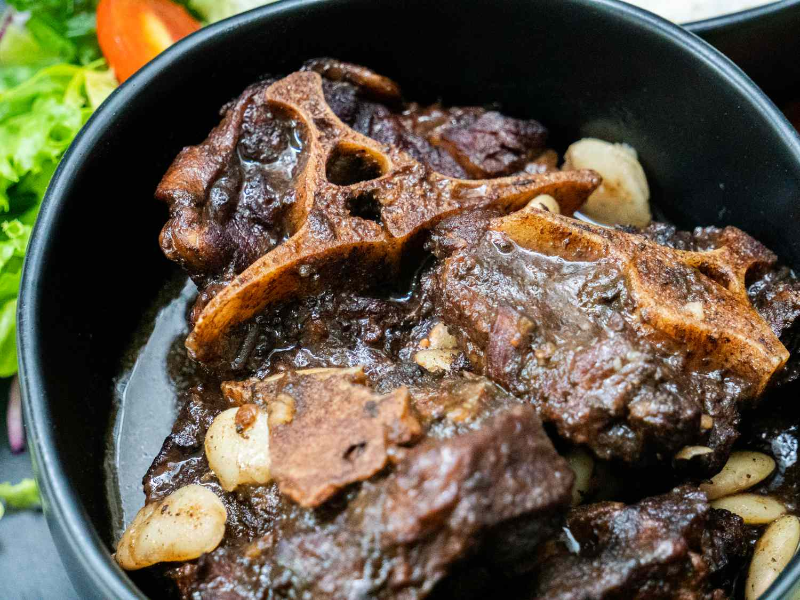

Oxtail

Oxtail is a popular Jamaican dish made from the tail of a cow or steer that's stewed with vegetables, spices, and other ingredients
Ingredients:
- Beef Oxtail
- Brown Sugar
- Soy Sauce
- Worcestershire Sauce
- salt
- Garlic Powder
- Black Pepper
- Allspice
- Thyme
- Onion
- Carrots
Steps
- Ingredients Preparation:
- Gather the following ingredients:
- 2-3 pounds of oxtail, cleaned and cut into chunks
- 1 large onion, chopped
- 2 cloves of garlic, minced
- 2-3 green onions, chopped
- 1 teaspoon of allspice
- 1 teaspoon of black pepper
- 1 teaspoon of paprika
- 1-2 sprigs of fresh thyme
- 1 Scotch bonnet pepper, chopped (optional for heat)
- 2 tablespoons of soy sauce
- 1 tablespoon of Worcestershire sauce
- Salt to taste
- 2 cups of beef broth or water
- 1 can of butter beans (optional)
- 1 tablespoon of brown sugar or browning sauce
- 2-3 carrots, sliced (optional)
- Cooking oil
- Marinate the Oxtail:
- Place the oxtail in a bowl and add onions, green onions, garlic, allspice, black pepper, paprika, thyme, soy sauce, and Worcestershire sauce.
- Mix well to coat the oxtail pieces evenly.
- Cover and marinate in the fridge for at least 4 hours, preferably overnight for deeper flavor.
- Brown the Oxtail:
- Heat oil in a large pot or Dutch oven over medium-high heat.
- Add brown sugar or browning sauce and let it melt until it darkens (careful not to burn).
- Add the marinated oxtail pieces to the pot and brown each side for about 3-4 minutes.
- Simmer the Oxtail:
- Add beef broth or water to the pot to cover the oxtail.
- Bring to a boil, then reduce to a simmer.
- Cover and let it cook for about 2-3 hours or until the oxtail is tender. Stir occasionally and add more water if necessary.
- Add Vegetables and Beans:
- About 30 minutes before the oxtail is done, add carrots and butter beans to the pot.
- Continue to simmer uncovered until the sauce thickens.
- Final Seasoning:
- Taste and adjust salt, pepper, or any additional seasonings as needed.
- Serve:
- Serve the Jamaican oxtail over white rice or rice and peas.
- Garnish with fresh thyme or green onions if desired.